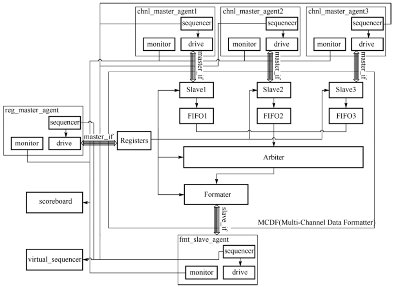
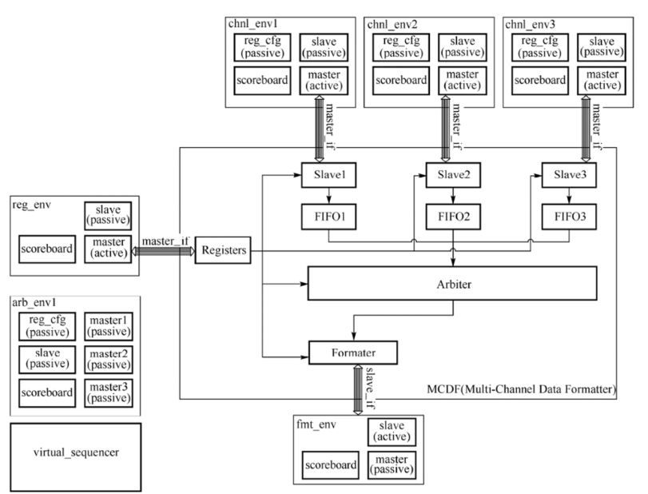
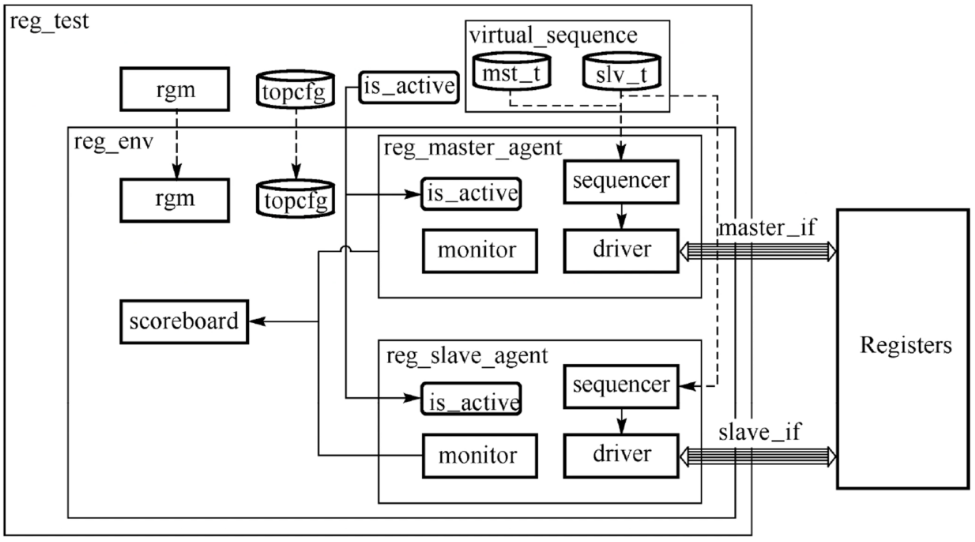

MCDF顶层验证方案
环境集成方案1

class mcdf_env1 extends uvm_env;
`uvm_component_utils(mcdf_env1)
reg_master_agent reg_mst;
chnl_master_agent chnl_mst1;
chnl_master_agent chnl_mst2;
chnl_master_agent chnl_mst3;
fmt_slave_agent fmt_slv;
mcdf_virtual_sequencer virt_sqr;
mcdf_scoreboard sb;
...
function void build_phase(uvm_phase phase);
super.build_phase(phase);
reg_mst = reg_master_agent::type_id::create("reg_mst", this);
chnl_mst1 = chnl_master_agent::type_id::create("chnl_mst1", this);
chnl_mst2 = chnl_master_agent::type_id::create("chnl_mst2", this);
chnl_mst3 = chnl_master_agent::type_id::create("chnl_mst3", this);
fmt_slv = fmt_slave_agent::type_id::create("fmt_slv", this);
virt_sqr = mcdf_virtual_sequencer::type_id::create("virt_sqr", this);
sb = mcdf_scoreboard::type_id::create("sb", this);
endfunction
function void connect_phase(uvm_phase phase);
super.connect_phase(phase);
......
endfunction
endclass
环境集成方案2

对比
- 方案一需要新建一个scoreboard来检查MCDF的整体功能
- 方案二复用底层模块环境的scoreboard，减少顶层环境的额外成本
总结
- UVM各个模块的验证环境是独立封装的，对外不需要保留数据端口，便于环境的进一步集成复用
- 由于phase机制，无需考虑子环境之间的例化顺序导致的句柄悬空问题
- 子环境的测试序列相对独立，复用子环境测试序列构成virtual sequence时，不需要其他额外的迁移成本
- 通过config_db配置方式，使得顶层环境可以在不同uvm_test进行集中管理配置
构建验证环境的内经
环境构建的四要素
- 单元组件的自闭性
- 回归创建
- 通信端口连接
- 顶层配置
单元组件的自闭性
- 自闭性是单元组件自身可以成为独立行为、不依赖于其他并行的组件
- 各个子环境可以独立集成于顶层环境，互相也不需要额外的通信连接
回归创建
- 回归创建依赖于自顶向下执行顺序的build phase
- build phase保证父组件必先于子组件创建，创建过程包含：
- 在定义成员变量时赋予默认值，或者在new()函数中赋予初始值
- 结构配置变量用来决定组件的条件生成，例如uvm_agent依靠is_active变量来判断是否需要例化uvm_sequence和uvm_driver
- 模式配置变量用来决定各个子组件的工作模式
- 子组件按照自顶向下、从前到后的顺序依次生成
通信端口连接
顶层配置
- UVM结构不建议用户通过引用子环境句柄，继而索引更深层次的变量进行顶层配置
- 更好的方法是通过配置话对象，作为绑定于顶层环境的部分传递到子环境，而子环境的各个组件又可以从结构化的配置对象中获取自身的配置参数，从而在build phase、connect phase以及run phase中来决定它们的结构和运行模式
- 配置的作用域应该只关注当前层次及以下，而不涉及更高的层次
- 配置的对象结构应该尽量独立，最好同环境结构一样形成一个树状结构
- config_db的配置特性使得高层的配置会覆盖低层的配置
顶层配置举例-reg

环境元素分类